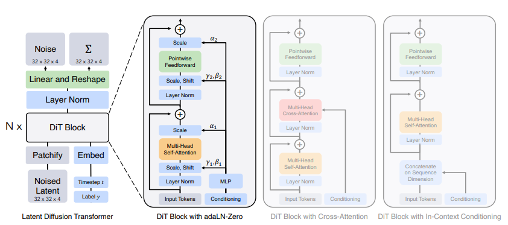

DiT: Diffusion Transformer#
DiT (Diffusion Transformer) applies the transformer architecture to diffusion models for image generation. It treats diffusion as a sequence modeling problem where the transformer predicts noise at each timestep.
Based on paper: Scalable Diffusion Models with Transformers (Peebles & Xie, 2023)
Key Idea#
Instead of using CNNs (like U-Net) for diffusion, DiT uses a Vision Transformer (ViT) architecture:
Tokenization: Split image into patches, convert to tokens
Diffusion as sequence: Treat noise prediction as sequence modeling
Transformer: Process token sequence to predict added noise
DDPM: Generate images by iteratively denoising
Architecture#

*Figure 1: DiT architecture overview from the DiT paper (Peebles & Xie, 2023). Shows the transformer-based diffusion model with patch embedding, timestep conditioning, and noise prediction.*Components#
1. Patch Embedding#
Converts input image into a sequence of tokens:
Image of size
(C, H, W)split into(H/P × W/P)patchesEach patch linearly embedded to dimension
DAdd positional embeddings
2. Timestep & Condition Embeddings#
Timestep: sinusoial positional encoding for diffusion timestep
tClass label: Optional conditioning for class-conditional generation
Both added to each token
3. DiT Blocks#
Transformer blocks with:
Self-attention: Capture relationships between patches
MLP: Process each patch independently
Adaptive Layer Norm (AdaLN): Condition on timestep/class
Variants:
AdaLN: Adaptive Layer Norm
AdaLN-Single: More parameter-efficient
AdaLN-Diagonal: Condition variance too
4. Output Head#
Final layer predicting noise (ε) same dimension as input:
Training#
from world_models.configs import DiTConfig, get_dit_config
cfg = get_dit_config(
DATASET="CIFAR10",
BATCH=128,
EPOCHS=100,
IMG_SIZE=32,
WIDTH=384,
DEPTH=6,
)
# Training uses DDPM noise scheduling
Key Hyperparameters#
Parameter |
Default |
Description |
|---|---|---|
|
32 |
Input image size |
|
4 |
Patch size |
|
384 |
Transformer embedding dim |
|
6 |
Number of blocks |
|
6 |
Attention heads |
|
1000 |
Diffusion steps |
|
1e-4 |
Noise schedule start |
|
0.02 |
Noise schedule end |
Sampling (Generation)#
# Start from random noise
# Iteratively denoise
for t in reversed(range(T)):
ε = model(x_t, t) # Predict noise
x_{t-1} = x_t - sqrt(1-alpha_bar_t) * ε # Remove predicted noise
# Output: x_0 (generated image)
Classifier-Free Guidance#
For conditional generation, use classifier-free guidance:
where w is guidance weight (typically 1-10).
Comparison to CNN-Based Diffusion#
Aspect |
U-Net (DDPM) |
DiT (Transformer) |
|---|---|---|
Architecture |
CNN with skip connections |
ViT |
Global attention |
Limited |
Full |
Scalability |
Medium |
High |
Quality |
Good |
Slightly better |
Compute |
Efficient |
Higher |
Applications#
Image generation: High-quality unconditional/class-conditional
Image editing: Inpainting, outpainting
Video generation: Temporal extension
World models: For model-based RL (as observation model)
References#
Peebles, W., & Xie, S. (2023). Scalable Diffusion Models with Transformers.